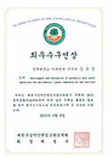

치의학박사
치주과전문의
대표원장
김유경
치과의사 중 치주과 전문의는 단 7%
대표원장이 꼼꼼하게 진료합니다.
연세대학교
치의학 박사
치주과
전문의
심미학회
전문의
University of Pensylvenia Endodontic Master coursr 수료
Osstem Prothodontic Master course 수료
Kaya 임상 보철 세미나 수료
International Team for lmplantology member
데일카네기 최고경영자과정 서울90기 수료
Osstem Prothodontic Master course 수료
Kaya 임상 보철 세미나 수료
International Team for lmplantology member
데일카네기 최고경영자과정 서울90기 수료
2015년 Osstem Meeting Poster Presentation 최우수상 수상
2015년 구강악안면임플란트학회 춘계학술대회 최우수 구연상 수상
2016년 공직치과의사회 최우수 구연상 수상
2016년 Shinhung lmplant Dentistry 임상 포스터 우수상 수상
2015년 구강악안면임플란트학회 춘계학술대회 최우수 구연상 수상
2016년 공직치과의사회 최우수 구연상 수상
2016년 Shinhung lmplant Dentistry 임상 포스터 우수상 수상
前) 분당예치과 치주과장
前) 강남 e-플란트 치과 원장
前) 강남 e-플란트 치과 원장
보건복지부 인증 치주과 전문의
연세대학교 치과대학원 치의학 박사 졸업
現) 연세대학교 치과대학 외래교수
연세대학교 졸업
국민건강보험공단 일산병원 인턴 수료
연세대학교 신촌 세브란스 치과대학병원 레지던트 수료
연세대학교 신촌 세브란스 치과대학병원 임플란트 클리닉 수료
대한 치주과학회 정회원
대한 임상치주과학회 정회원
대한 심미치과학회 인정의
대한 심미치과학회 정회원
대한 턱관절교합학회 교합 아카데미 수료
오스템 임플란트 임상지도의
연세대학교 치과대학원 치의학 박사 졸업
現) 연세대학교 치과대학 외래교수
연세대학교 졸업
국민건강보험공단 일산병원 인턴 수료
연세대학교 신촌 세브란스 치과대학병원 레지던트 수료
연세대학교 신촌 세브란스 치과대학병원 임플란트 클리닉 수료
대한 치주과학회 정회원
대한 임상치주과학회 정회원
대한 심미치과학회 인정의
대한 심미치과학회 정회원
대한 턱관절교합학회 교합 아카데미 수료
오스템 임플란트 임상지도의

